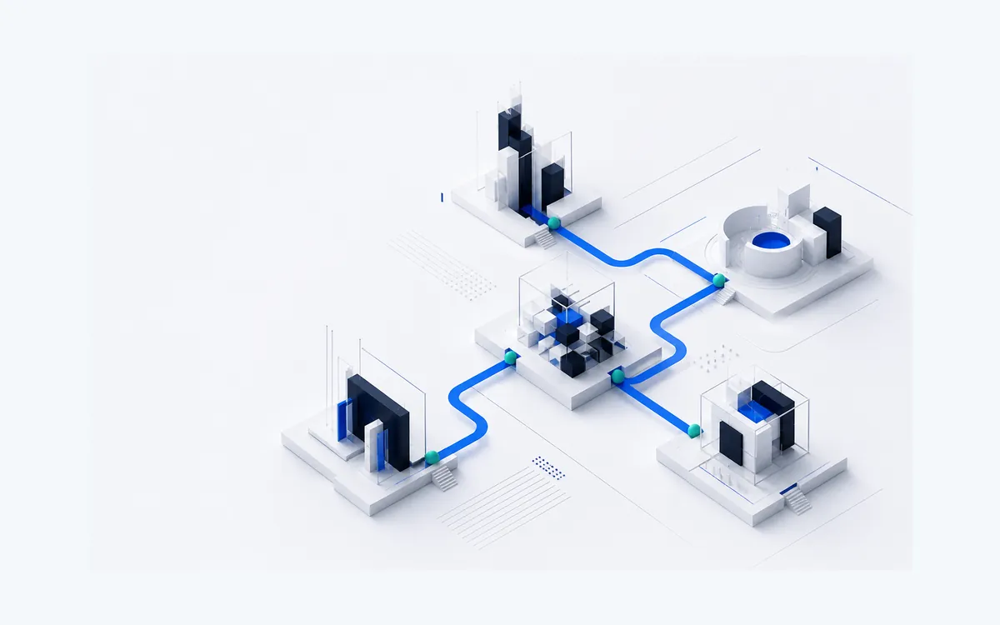
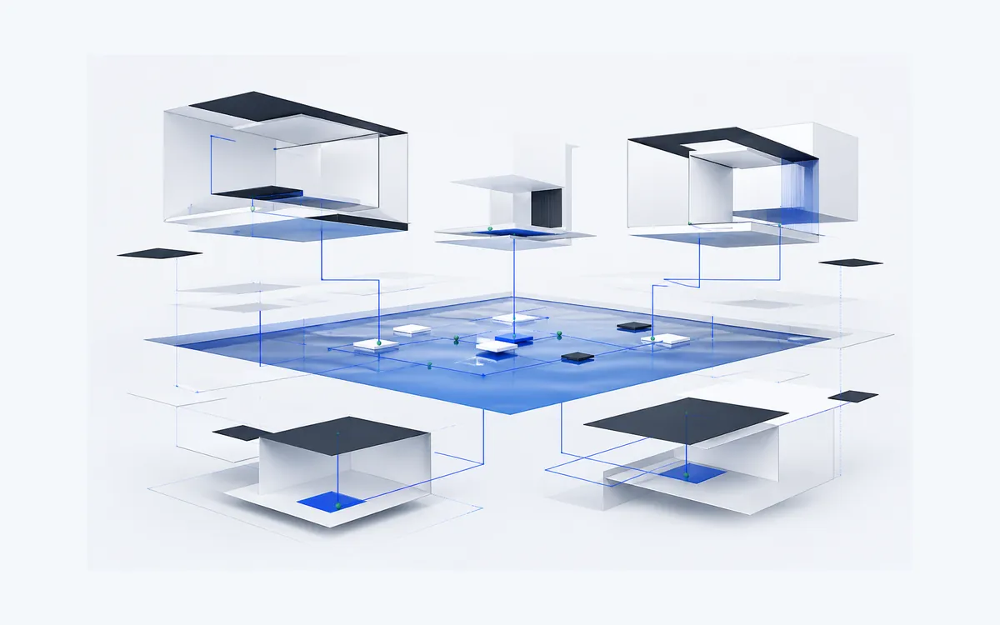
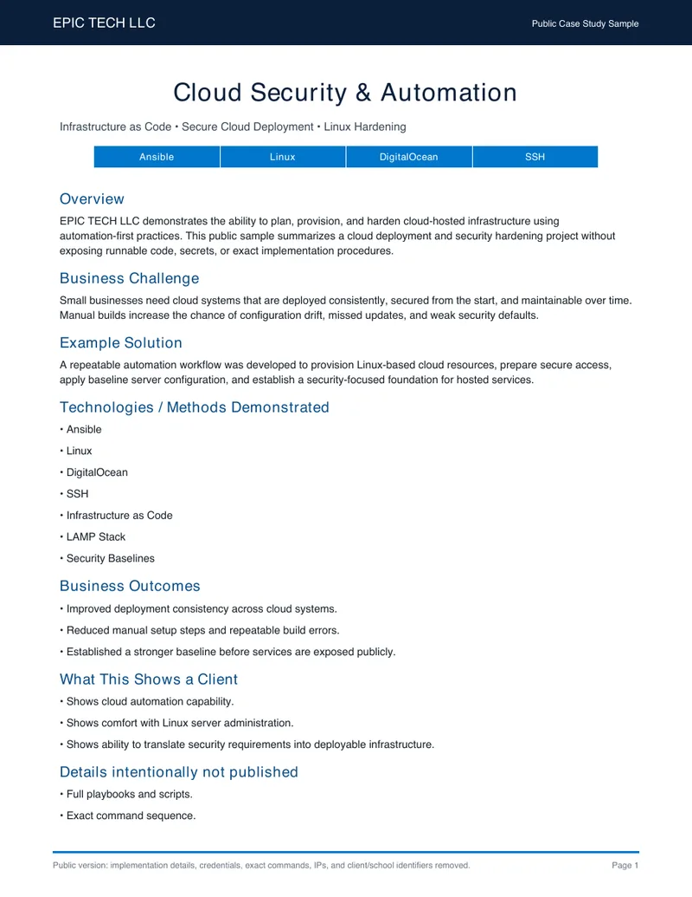
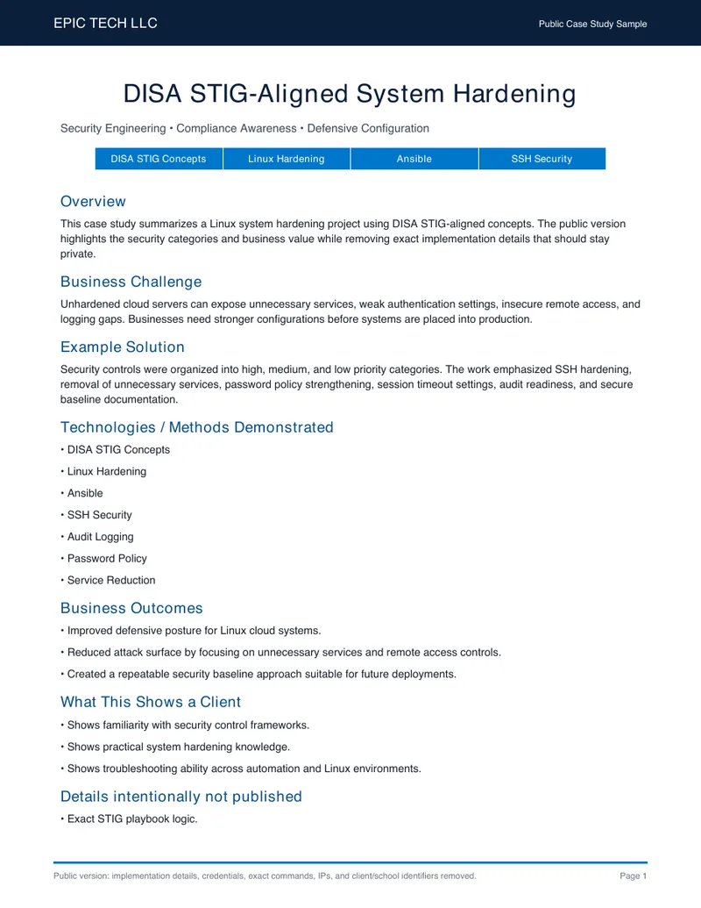
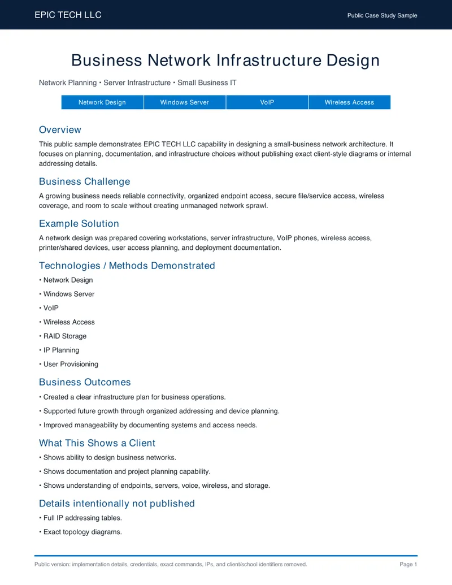

Reliable foundations
Networks & Security
Secure Wi-Fi, guest networks, firewall baselines, VPN basics, and practical protection for daily business operations.

EPIC TECH helps Central Florida businesses fix unreliable Wi-Fi, replace slow or outdated websites, close security gaps before they become incidents, and build simple tools to replace scattered spreadsheets. Every project starts with a written plan and a clear price.

Service before scale. Clarity before complexity.
Secure Wi-Fi, guest networks, firewall baselines, VPN basics, and practical protection for daily business operations.
Fast, clean websites built to load well, explain your services, convert visitors into leads, and support secure online sales.
Lead dashboards, client tracking, quote tools, invoice workflows, forms, and repeatable automation built around how your business actually works.

We help build small VM labs and isolated environments so technology can be tested without risking the main business network.

A veteran founder focused on building clear, practical solutions.
EPIC TECH brings service, technical training, and practical problem solving together so businesses can work with more clarity, efficiency, and confidence.
Meet the founder →Public-safe examples showing security, infrastructure, and automation capability.

Ansible automation, Linux hardening, and repeatable cloud deployment.
View case study →
Security baseline planning aligned with hardened Linux system concepts.
View case study →
Small-business network planning with endpoints, Wi-Fi, server access, and documentation.
View case study →Every project starts with scope. You get a plain-English plan, exact pricing, and a written handoff so the work does not disappear into someone else's head.
We review the network, website, workflow, risk, budget, and goal.
You get options and a clear recommendation before buying hardware or hosting.
The setup is completed, tested, and secured with minimal disruption.
You get notes, handoff details, and next steps for support.
A clean written plan for your network, website, firewall, business app, CRM workflow, or IT setup before you commit to a bigger project.
Schedule assessment